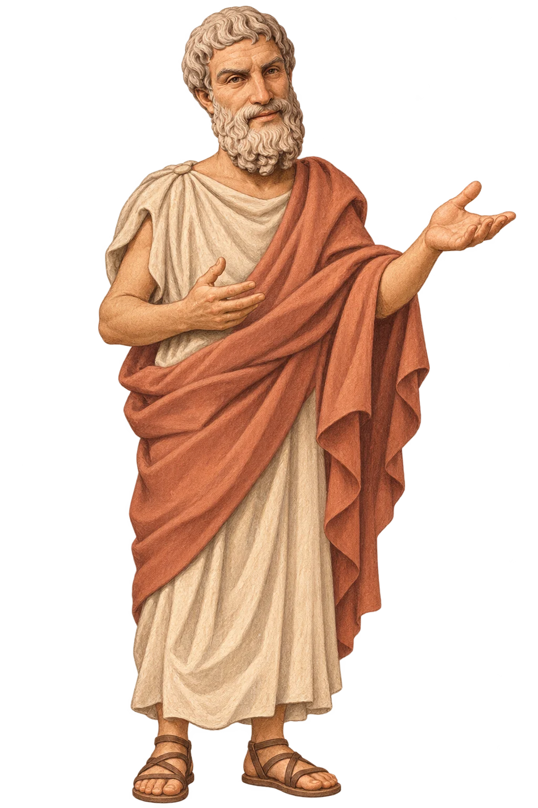
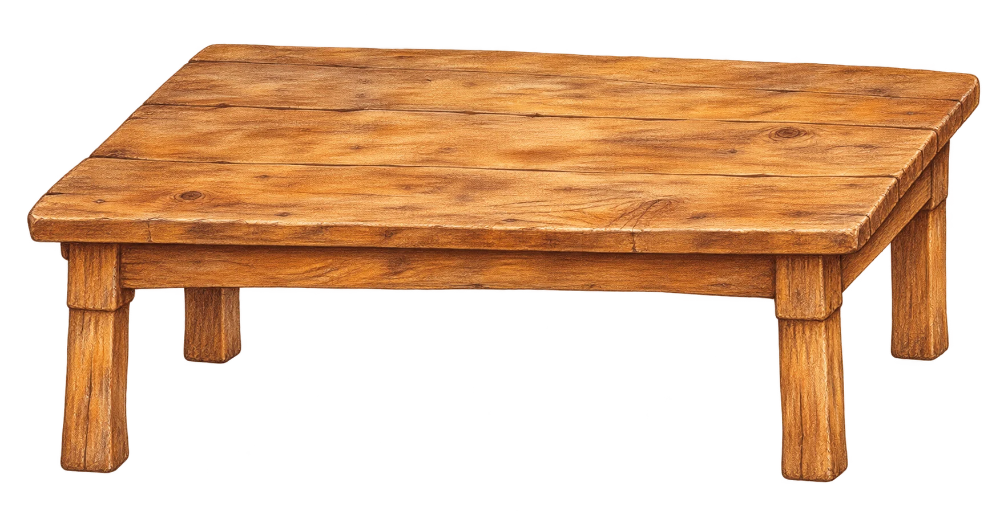

Erst still überlegen. Dann mit dem Nachbarkind sprechen. Anschließend hören wir verschiedene Gründe.
Am Board: Plant zwei Abschnitte mit je etwa 20–30 Minuten ein, abhängig von den Gesprächen. Abschnitt 1: Vermutung, Reisende, Markt und Wunschgründe. Abschnitt 2: Gast, Folgenwaage, vier Wunschkarten und Rückblick. Kapitel sind direkt anwählbar. Der Spielstand bleibt nur solange die Seite geöffnet ist.
Kennenlernen und Feigen: Am Anfang steht „Wahr oder erfunden?“ mit vier Behauptungen über Epikur; der Steckbrief ist oben jederzeit erreichbar. Für jeden untersuchten Gedanken gibt es eine Feige (sieben insgesamt) – nie für eine Meinung, und keine ist versteckt.
Keine Glückspunkte: Es gibt keinen Seelenruhe-Score und keine Rangtitel. Münzen zeigen nur das Einkaufsbudget. Mehrere Versorgungsvarianten sind möglich; teuer bedeutet nicht automatisch unnötig. Gespräche sind eine eigene Handlung, keine Ware.
Wunsch und Grund: Die drei großen Karten zeigen beides vor der Zuordnung. Vergleicht eure Begründung danach mit Epikurs Einordnung. Bei offenen Urteilen gibt es keine Punkte.
Waage: Die Folgen sind mögliche Gesprächsanlässe. Ihre Anzahl bestimmt keine Neigung. Die Klasse stellt ihr begründetes Urteil selbst ein und darf die Frage offen lassen. Beim Wasserholen sind Hilfe, Sicherheit und Alternativen ausdrücklich zu besprechen.
Fachlicher Kern: natürlich und notwendig · natürlich, aber nicht notwendig · weder natürlich noch notwendig. Die Kurzbezeichnungen sind didaktische Hilfen. Freundschaft ist bei Epikur besonders wichtig; ihre Einordnung bei den notwendigen Wünschen ist hier eine vereinfachende Deutung. Zusätzlicher Genuss ist nicht verboten.
Sortieren: Vier Kernkarten einschließlich des Jackenpaars; acht Karten als freiwillige Vertiefung am Ende. Rückmeldungen beziehen sich auf die dargestellte Einteilung, nicht auf den Wert einer Person oder ihrer Meinung.
Gespräch: Erst allein nachdenken, dann austauschen und begründen. Die Sanduhr ist optional. Unsere Gedanken sind am Ende vollständig zugänglich; es gibt keine versteckte Erkenntnis.
Epikurs Aussagen sind vereinfachte sinngemäße Darstellungen, keine historischen Zitate. Die Bilder sind freie Interpretationen.